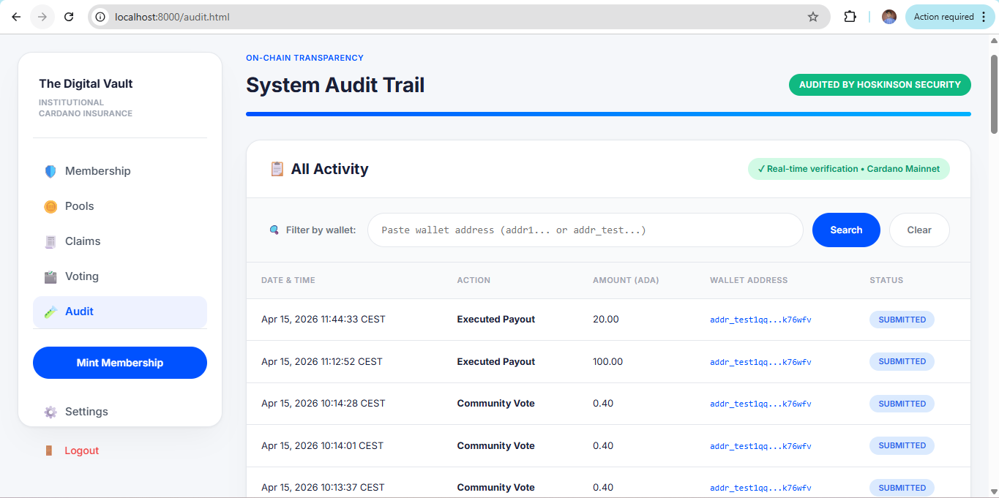

CoxyInsure User Help Documentation.
9. History and Audit
The history and audit surfaces give users and administrators visibility into what has happened in the protocol. These views are important because blockchain confirmation alone is not enough for a user-friendly operational dashboard.
9.1 User History
- View recent pool activity.
- Inspect deposit, withdrawal, cover, and claim-related records.
- Search by wallet address when supported.
9.2 Audit and Reporting
Audit-facing pages can summarize claim submissions, payouts, governance decisions, and other protocol events. They are useful for compliance-style review and support operations.
9.3 What to Look For
Transaction hash
Use it to verify on-chain actions if needed.
Status
Watch for submitted, confirmed, rejected, or executed states.
Actor wallet
Useful for tracing deposits, claims, and admin decisions.
